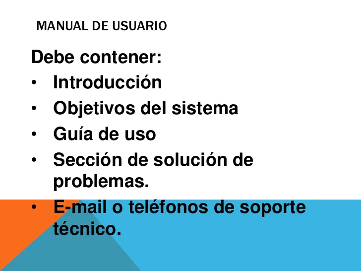
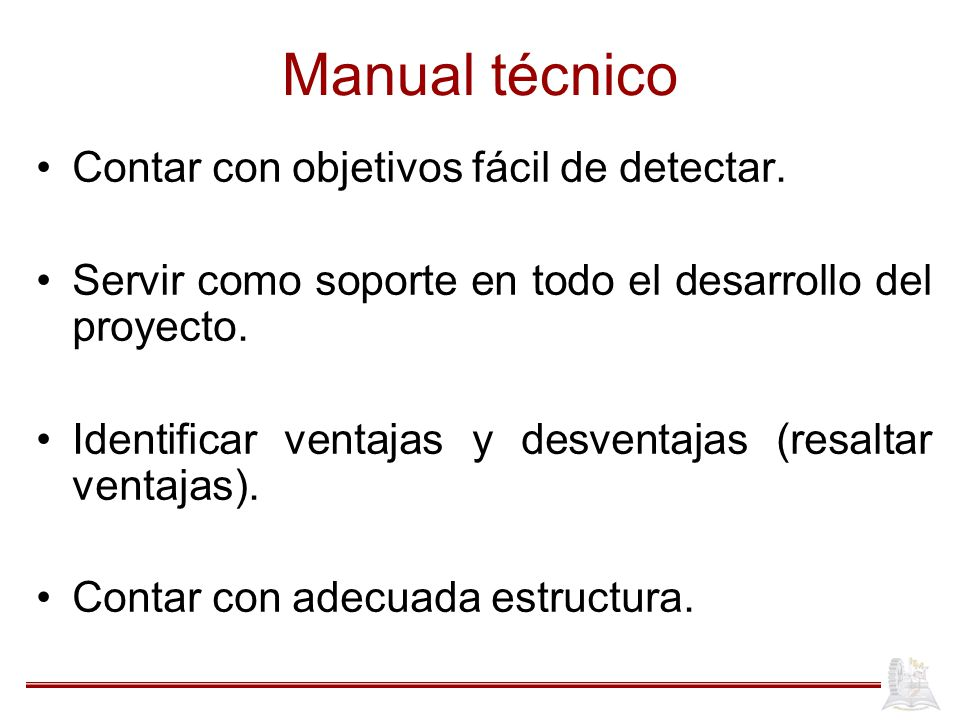

| INTRODUCCION! | |
|---|---|
|
Es un documento técnico de un determinado sistema que intenta dar asistencia a sus usuarios.En general, debería poder ser entendido por cualquier usuario principiante, como así también serle útil a usuarios avanzados; documento contiene toda la información sobre los recursos utilizados por el proyecto, explicado todo el trabajo que se ha realizado al desarrollar un sistema llevan una descripción muy bien detallada sobre las características físicas y técnicas de cada elemento.. |
| DEFINICION MANUAL DE USUARIO | |
|---|---|
|
Una Guía de usuario, también conocida como Manual de usuario, es un documento de comunicación técnica destinado a dar asistencia a las personas que utilizan un sistema en particular. Por lo general, este documento está redactado por un escritor técnico como por ejemplo los programadores del sistema o los directores de proyectos implicados en su desarrollo, o el personal técnico, especialmente en las empresas más pequeñas. |
| ESTRUCTURA MANUAL DE USUARIO | |
|---|---|
|
Una estructura frecuente de los manuales de usuario |  |
| DEFINICION MANUAL TECNICO | |
|---|---|
|
Un manual técnico es aquel que va dirigido a un público con conocimientos técnicos sobre algún área. La documentación de proyectos es importante para identificar mas fácilmente los aspectos y características que forman parte de un proyecto. |
| ESTRUCTURA MANUAL TECNICO | |
|---|---|
|
Un manual técnico El manual técnico va dirigido a la dirección de IT, al administrador del sistema y a otros desarrolladores de software para que puedan darle mantenimiento en caso que se requiera. |  |